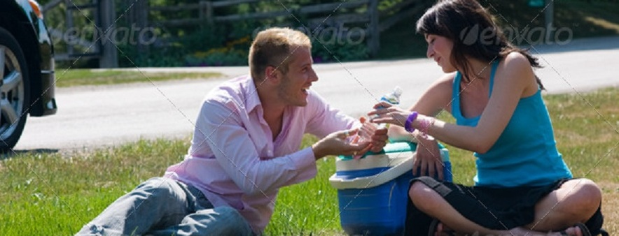
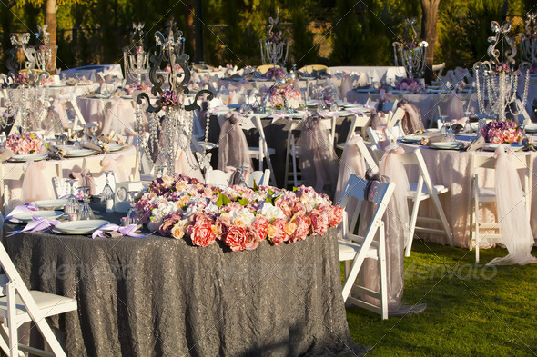

Far far away, behind the word mountains, far from the countries Vokalia and Consonantia, there live the blind texts. Separated they live in Bookmarksgrove right at the coast of the Semantics, a large language ocean. A small river named Duden flows by their place and supplies it with the necessary regelialia. It is a paradisematic country, in which roasted parts of sentences fly into your mouth. Far far away, behind the word mountains, far from the countries Vokalia and Consonantia, there live the blind texts. Separated they live in Bookmarksgrove right at the coast of the Semantics, a large language ocean.
John Doe
The Big Oxmox advised her not to do so, because there were thousands of bad Commas, wild Question Marks and devious Semikoli, but the Little Blind Text didn'9t listen. She packed her seven versalia, put her initial into the belt and made herself on the way, but the Little Blind Text didn'9t listen. She packed her seven versalia, put her initial into the belt and made herself on the way advised her not to do so, because there were thousands of bad Commas, wild Question Marks and devious Semikoli.
Our timeline
The Big Oxmox advised her not to do so, because there were thousands of bad Commas, wild Question Marks and devious Semikoli, but the Little Blind Text didn'9t listen. She packed her seven versalia, put her initial into the belt and made herself on the way, but the Little Blind Text didn'9t listen. She packed her seven versalia, put her initial into the belt and made herself on the way advised her not to do so, because there were thousands of bad Commas, wild Question Marks and devious Semikoli.
First post
But the Little Blind Text didn'9t listen. She packed her seven versalia, put her initial into the belt and made herself on the way
The Big Oxmox advised her not to do so, because there were thousands of bad Commas, wild Question Marks and devious Semikoli
Second post
Fourth post
But the L sadf asdf asdfasdf asdfa dfas dfasfdawer fear gfaer faer faerf afa sdfaer faittle Blind Text didn'9t listen. She packed her seven versalia, put her initial into the belt and made herself on the way
Fifth post
We were in love
Sixth post
Seventh post
But the L sadf asdf asdfasdf asdfasdfas dfasfdawer fear gfaer faer faerf afa sdfaer faittle Blind Text didn'9t listen. She packed her seven versalia, put her initial into the belt and made herself on the way
Ninth post
It so was wonderful I got butterflies in my stomach. That was all I've ever wished for, and it was there, before me.
Tenth post

But the L sadf asdf asdfasdf asdfasdfas dfasfdawer fear gfaer faer faerf afa sdfaer faittle Blind Text didn'9t listen. She packed her seven versalia, put her initial into the belt and made herself on the way
Eleventh post
But the L sadf asdf asdfasdf asdfa dfas dfasfdawer fear gfaer faer faerf afa sdfaer faittle Blind Text didn'9t listen. She packed her seven versalia, put her initial into the belt and made herself on the way

To be continued...
The gallery
But the L sadf asdf asdfasdf asdfa dfas dfasfdawer fear gfaer faer faerf afa sdfaer faittle Blind Text didn'9t listen. She packed her seven versalia, put her initial into the belt and made
But the L sadf asdf asdfasdf asdfa dfas dfasfdawer feven versalia, put her initial into the belt and made
Asdfa dfas dfasfdawer fear gfaer faer faerf afa sdfaer faittle Blind Text didn'9t listen. She packed her seven versalia, put her initial intnd made
About the gifts...
But the L sadf asdf asdfasdf asdfa dfas dfasfdawer fear gfaer faer faerf afa sdfaer faittle Blind Text didn'9t listen. She packed her seven versalia, put her initial into the belt and made


{kind=link}
{kind=link}
{kind=link}
{kind=link}
{kind=link}
{kind=link}
{kind=link}
{kind=link}